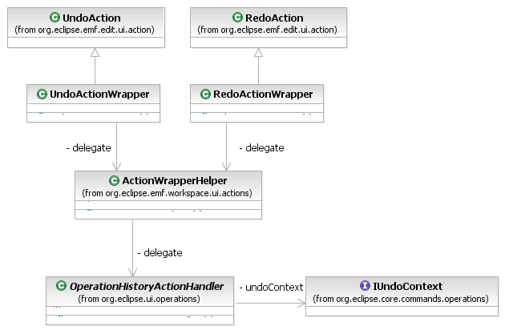

The workspace editing domain API provides convenient specializations of the EMF.Edit UI framework's undo and redo actions, that delegate to the Eclipse Operation History API's undo/redo action handlers.

[as SVG]
The UndoActionWrapper and RedoActionWrapper classes provide replacements for EMF's undo/redo actions that delegate to the operation history API's action handlers. These wrappers create undo/redo action handlers on the undo context obtained by adapting the active editor part to the IUndoContext type. Usually this undo context is a resource context.
Copyright (c) 2006, 2007 IBM Corporation and others. All Rights Reserved.